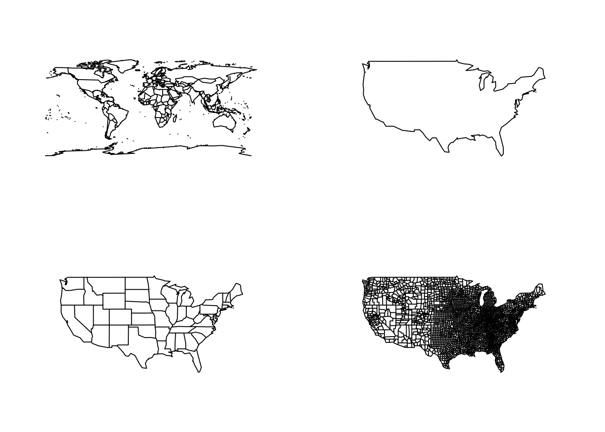
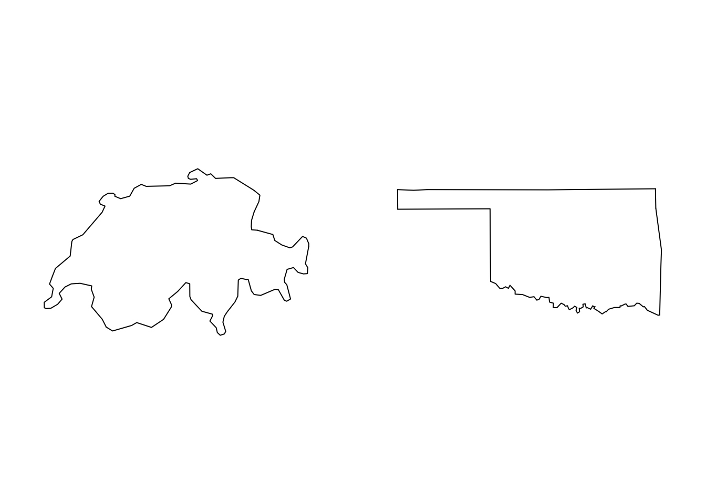
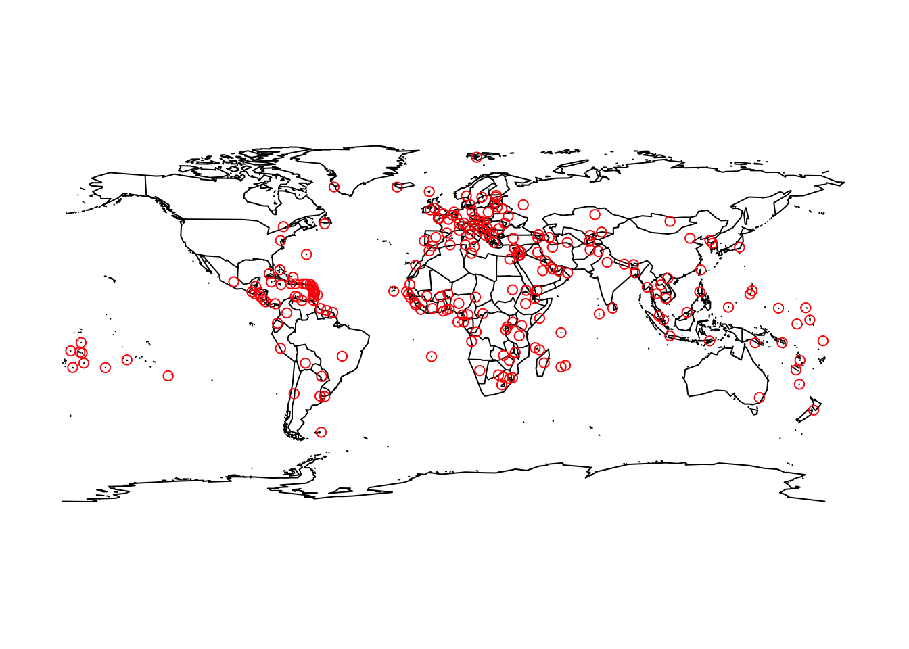

Chapter 11 Extending Base R Graphics
Base R Graphics can be greatly extended. There are several packages, functions, and features that we can add to our standard graphics.
11.1 The “maps” Package
Base R plotting is very powerful and has many features. However, sometimes you want to create something specialized or create a more unique type of plot. There are a lot of plotting tools that can be added to base R plots by using packages. Packages are covered in more detail in Section 10.
We specifically consider the maps package which lets us create different types of maps in R. The most important function in this package is the function map(). This function generates various types of maps depending on the inputted values. If we input nothing, then the function defaults to creating a map of the world with lines dividing the different countries.
## Warning: package 'maps' was built under R version 4.0.2
The first argument for the function map() is called database. This argument is expecting a character vector of length 1. The element in this vector corresponds to the map you want to create. As we saw above, the default for this package is to create a world map, this corresponds to when argument is database= "world". The values this argument can support are: “world”, “usa”, “state”, and “county”.

Within these maps we can specify specific regions that we may want plotted. In general, it supports the names of countries, and states in the US. To specify a region to be plotted we use the region argument, which is the second argument of the function.

These functions have some of the same features of our normal Base R functions. For example, we can still add points and lines to these graphs, but now we have to do it in the correct coordinate system.
For example, we can plot the locations of world cities that are capitals using the data set world.cities which is part of the maps package using the base R plot function points().
map("world")
captial_cities = world.cities[world.cities$capital==1, ]
points(captial_cities$long, captial_cities$lat, col = "red")
The maps package does not use the standard base R label arguments like main, xlab, ylab. However, if we wish to have a map with labels we can use the function map.text() instead of map(). This is essentially the same function as map(), but it defaults to labeling the graph for us. If we want to add our own custom label we use the labels argument.
par(mfrow = c(1,2))
# Default Label
map.text("world", regions = "Switzerland")
# Custom Label
map.text("state", regions = "oklahoma", labels = "Custom Label Here")
11.2 Some additional Packages to consider
Extend Fonts and Colors
showtext: Extend the fonts of R
emojis: Add emojis to plots.
viridis: Color palettes for common forms of color blindness and/or color vision deficiency.
RColorBrewer: Color palettes particularly common for maps.
wesanderson: Color palettes generated mostly from ‘Wes Anderson’ movies.
More Plot Formats
corrplot: Provides a visual exploratory tool on correlation matrix that supports automatic variable reordering to help detect hidden patterns among variables.
heatmp: Create heat maps.
riverplot: Implements Sankey or Ribbon plots.
sinaplot: Creates enhanced jitter strip chart, where the width of the jitter is controlled by the density distribution of the data within each class.
vcd: Visualization techniques, data sets, summary and inference procedures aimed particularly at categorical data.
visreg: If you know about linear regression, you can use this make advanced linear regression plots.
vioplot: Creates violin plots which are a combination of a box plot and a density plot (density plots look kinda like histograms).
For even more packages that extend Base R graphics: https://blog.insileco.io/wiki/rgraphpkgs/